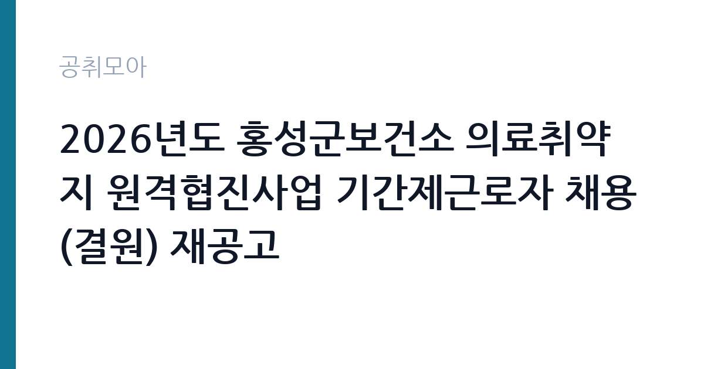

[지자체] 2026년도 홍성군보건소 의료취약지 원격협진사업 기간제근로자 채용(결원) 재공고
충청남도 홍성군 보건소 · 충남 · 마감 2026-11-09 (D-6) · 출처 나라일터

한눈에 보는 모집 조건
| 기관 | 충청남도 홍성군 보건소 |
|---|---|
| 공고명 | 2026년도 홍성군보건소 의료취약지 원격협진사업 기간제근로자 채용(결원) 재공고 |
| 고용형태 | 기간제 |
| 근무지 | 충남 |
| 게시일 | 2026-11-03 |
| 마감일 | 2026-11-09 (D-6) |
지원자격, 이렇게 읽으세요
- 기간제근로자 1명
- 접수 ~2026-11-09 마감
- 세부 조건은 원문 공고문 확인
기간제 근로자는 근로계약 기간이 정해진 신분입니다. 계약 기간과 갱신 가능 여부가 근로계약서에 명시되며 기간 만료 시 근로관계가 종료됩니다. 결원 보충이나 특정 사업 기간에 맞춰 채용되는 경우가 많아 업무 범위가 명확합니다. 이번 공고는 충청남도 홍성군 보건소에서 직접 진행하는 자체 전형으로, 응시자격과 제출서류는 공고문에 항목별로 제시됩니다. 보건 사업 운영 경력이나 보건 관련 자격이 있으면 유리하고, 간호·보건 계열 학과 이수자는 직무 이해도가 높습니다. 컴퓨터와 화상 장비를 다루는 능력이 실제 업무에 바로 쓰이고, 대상자 응대 태도도 평가됩니다. 기간제 근로자로 채용되어 계약 기간이 정해져 있으며, 근무 시작일부터 사업이 끝나는 시점까지 근무할 수 있어야 합니다. 재공고인 만큼 제출서류와 접수 기간이 이전 차수와 다른 부분이 없는지 원문을 대조하십시오. 서류는 접수 마감 이후 보완이 되지 않으므로 자격 요건과 증빙 서류를 마감 전에 모두 갖춰야 합니다. 공고문에 명시된 우대 사항은 해당 여부를 확인해 증빙을 첨부해야 가점이 반영됩니다. 응시 자격 판단이 애매하다면 접수 전에 채용 담당 부서로 문의하는 편이 안전합니다. 서류 제출 후에는 소명 기회가 없습니다.
이 공고의 포인트
이 공고의 첫 번째 포인트는 고용 형태입니다. 계약 기간이 정해져 있어 근무 종료 시점이 명확합니다. 그만큼 짧은 기간에 어떤 실적을 남길지가 중요해집니다. 두 번째는 업무 범위가 명확하다는 점입니다. 원격협진사업 운영(보건) 직무로 채용되므로 배치 이후 담당 업무가 크게 흔들리지 않습니다. 세 번째는 근무지입니다. 충남 지역 근무로 수도권 공고에 비해 지원자 분포가 넓지 않아 상대적으로 경쟁이 분산되는 경우가 있습니다. 접수 기간이 길지 않아 서류 준비와 자격 확인을 동시에 진행해야 합니다. 같은 직무 공고 중에서는 접수 마감이 가장 빨라 일정을 앞당겨 잡아야 합니다. 다만 선발 인원이 1명으로 많지 않아 자격을 갖춘 지원자가 몰리면 경쟁률이 높아질 수 있습니다.
전형은 어떻게 진행되나
채용 절차는 공고문에 안내된 순서대로 진행되며, 서류 접수 마감 후에는 추가 접수나 서류 보완이 이뤄지지 않는 것이 원칙입니다. 서류심사에서는 응시자격과 제출서류의 형식 요건을 기계적으로 확인하므로, 경력 증명서의 기간과 직무 내용이 공고의 요건과 정확히 맞아야 합니다. 면접은 지원자 수에 따라 집단면접과 개별면접으로 나뉘고, 직무 관련 질문과 상황 대응 질문이 함께 나옵니다. 합격자 발표는 개별 통보 또는 홈페이지 게시로 이뤄지며 이후 임용 절차가 진행됩니다. 면접조 편성과 대기 시간이 공지되므로 당일 도착 시간을 여유 있게 잡으십시오.
이런 분께 추천해요
- 보건 사업 운영이나 건강 상담 경험이 있는 분
- 장비 사용법을 주민에게 쉽게 설명할 수 있는 분
- 사업 기간 동안 근무 일정을 지킬 수 있는 분
지원 전 체크리스트
- 응시자격 요건과 경력 기준을 충족하는가 — 경력은 증명서로 입증해야 합니다
- 계약 기간과 근무 시작일·종료일을 확인했는가
- 제출서류 목록을 모두 준비했는가 — 누락 시 서류 단계에서 탈락합니다
- 접수 마감 2026-11-09 이전에 접수 방식을 확인해 제출했는가
모집 일정과 제출 타이밍
접수 마감은 2026-11-09이고 공고는 2026-11-03에 게시되었습니다. 준비 기간 6일 안에 서류 작성, 증빙 발급, 접수를 모두 마쳐야 하므로 주말을 포함해 일정을 미리 나누는 것이 좋습니다. 특히 경력 기술서나 직무수행계획서를 요구하는 공고는 작성에 시간이 걸리므로 첫날 초안을 잡으십시오. 서류 합격자 발표와 면접 사이 간격이 짧은 경우가 많아 면접 예상 질문은 서류 제출 전에 정리해 두는 편이 유리합니다. 마감 직전에는 접속이 몰리므로 여유를 두고 제출하십시오. 공휴일이 끼어 있으면 증명서 발급이 늦어질 수 있으니 발급 일정을 앞당기십시오. 충남 근무지는 산업단지와 농촌 지역이 섞여 있어 통근 조건이 공고마다 다릅니다. 마감까지 일주일 안팎이 남아 서류 준비와 증빙 발급을 병행해야 합니다. 선발 인원이 한두 명 수준이라 지원자 개개인의 서류 완성도가 그대로 평가에 반영됩니다.
직무 이해하기: 지자체
홍성군 보건소의 의료취약지 원격협진사업 기간제 근로자는 원격 진료 지원 업무를 맡습니다. 보건지소와 보건진료소를 찾는 주민이 원격으로 의료진 상담을 받을 수 있도록 장비를 준비하고 연결 상태를 확인합니다. 진료 일정을 잡고 대상자 명단과 상담 결과를 기록하며, 검사나 처방에 따른 안내를 이어갑니다. 사업 참여자에게 이용 방법을 설명하고 만족도 조사와 실적 자료를 정리합니다. 결원 보충 재공고이므로 앞선 공고와 요건이 달라졌는지 확인해야 합니다. 업무 매뉴얼과 지침이 문서로 정리되어 있어 절차를 익히면 반복 업무는 빠르게 손에 붙습니다.
자기소개서 작성 팁
지원서는 보건 사업 운영 경험을 대상자 수와 처리 건수로 정리하는 것이 효과적입니다. 보건소나 복지기관에서 근무한 경험, 건강 상담이나 교육을 진행한 경험이 있다면 구체적으로 쓰십시오. 원격 협진은 장비와 사람을 함께 다루는 업무이므로, 장비 운영과 응대를 동시에 해낸 사례가 좋은 소재입니다. 사업 기간 동안 달성할 목표를 수치로 제시하면 좋습니다. 직무 경험이 많지 않다면 경험의 양보다 과정을 구체적으로 쓰는 편이 낫습니다. 어떤 상황에서 무엇을 판단했고 어떤 결과가 나왔는지 순서대로 서술하면 신뢰가 생깁니다. 지원 동기와 기여 방안은 한 문단씩 짧게 유지하고, 가장 자신 있는 경험에 분량을 몰아주십시오. 마지막 문장은 포부보다 구체적인 실행 계획으로 끝내는 것이 좋습니다.
면접 준비 포인트
면접에서는 사업 운영 실무와 응대 방식을 확인합니다. 고령의 대상자가 장비 사용을 어려워할 때 어떻게 설명할지, 진료 일정이 겹칠 때 어떻게 조정할지 묻습니다. 개인 의료 정보를 다루는 직무이므로 정보 보호 의식을 반드시 언급하십시오. 사업 실적을 어떤 지표로 관리할지 답하면 준비도가 드러납니다. 답변은 상황, 판단, 조치의 순서로 정리하면 전달이 분명해집니다. 모르는 질문에는 모른다고 밝히고 확인 방법을 제시하는 편이 억지 답변보다 낫습니다. 마지막에는 근무 의사와 함께 2026-11-09 이후 일정에 언제든 응할 수 있다는 점을 전달하십시오. 지원 기관의 최근 사업이나 조직 개편 내용을 확인해 두면 지원 동기 질문에서 차이가 납니다.
급여·근무조건 읽는 법
기간제 근로자 보수는 지방자치단체의 기간제 임금 기준과 경력에 따라 정해지며, 월급 형태와 일급 형태가 모두 있습니다. 2026년 적용 최저임금은 시급 10,320원, 월 환산 2,156,880원이므로 이보다 낮은 조건은 있을 수 없습니다. 계약 기간이 정해져 있어 총액으로 비교해야 하고, 주휴·연차 적용 여부도 함께 확인하십시오. 구체적인 금액은 공고문 처우 항목에서 확인할 수 있습니다. 2026년 적용 최저임금은 시급 10,320원, 월 환산 2,156,880원(주 40시간·209시간 기준)입니다. 고용노동부 고시 제2025-47호로 확정된 금액입니다. 공고문에 금액이 제시되지 않은 항목은 원문 보수표나 처우 설명에서 확인해야 하며 확인되지 않은 수치는 쓰지 않는 것이 원칙입니다. 비교할 때는 월 급여뿐 아니라 상여·명절휴가비·복지포인트·초과근무수당까지 포함한 연간 총액으로 계산하십시오. 기간제라면 계약 기간 동안의 총액을, 무기계약이라면 호봉 상승과 정년까지의 누적 소득을 기준으로 판단하는 편이 정확합니다.
자주 묻는 질문
- 선발 인원은 몇 명인가요?
공고문 기준 1명입니다. 직종별로 인원이 나뉘는 경우가 있으니 모집분야 항목을 함께 확인하십시오. - 근무지는 어디인가요?
충남 지역의 충청남도 홍성군 보건소 소속 근무지입니다. 세부 주소와 출퇴근 조건은 원문 공고문에서 확인할 수 있습니다. - 보수는 얼마인가요?
채용 신분(기간제)과 기관 임금 규정에 따라 정해지며 구체적인 금액은 공고문 처우 항목에 제시됩니다. 금액이 공개되지 않은 경우에는 원문의 보수표를 확인하십시오.
함께 보면 좋은 공고
[지자체] 2026년 제8회 구미시 임기제공무원 임용시험 계획 재공고 — 마감 2026-11-18[지자체] 2026년 제10회 구미시 임기제공무원 임용시험 시행계획 공고 — 마감 2026-11-18[지자체] 2026년 제2회 진안군 공무직근로자(정수시설관리원) 채용계획 재공고 — 마감 2026-11-13출처: 나라일터 공개정보를 바탕으로 공취모아가 정리한 안내글입니다. 모집 조건·일정은 변경될 수 있으니 지원 전 반드시 원문 공고문을 확인하세요. 본 글은 정보 제공용이며 합격을 보장하지 않습니다.